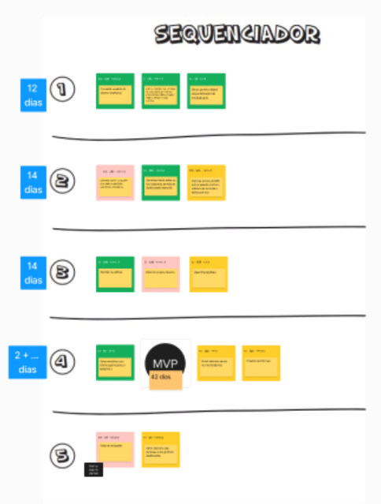
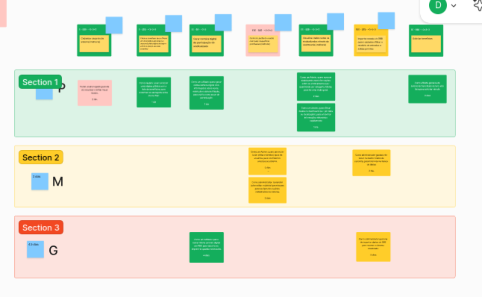

Backlog Inicial
O backlog do produto foi definido a partir do sequenciador instanciado durante o Lean Inception. Como pode ser visto abaixo: 
Com o sequenciador em mãos, o time se reuniu e começou a detalhar todas as funcionalidades a nível de Histórias de Usuários, que viriam a compor o Backlog do Produto. Na imagem abaixo é possível ver que as histórias foram instanciadas a partir das funcionalidades do MVP.

A tabela abaixo apresenta as histórias de usuário relacionadas à gestão de dados, importação de extratos financeiros, solicitação de benefícios e gestão de patrimônio, com seus respectivos pontos de complexidade.
| Categoria | História de Usuário | Pontos |
|---|---|---|
| Visualizar dados sobre os sindicalizados através de dashboards (melhoria) | Como um Admin, quero acessar dashboards com informações sobre os sindicalizados (ex.: quantidade por categoria, idade), para ter uma visão geral. | 21 |
| Como um Admin, quero filtrar dados no dashboard (ex.: por data ou localização), para encontrar informações relevantes rapidamente. | 8 | |
| Importar extrato do BRB para o sistema e filtrar o relatório de entradas e saídas por mês | Como administrador gostaria de tratar os dados vindos da consulta, para inseri-los no banco de dados. | 21 |
| Como administrador gostaria de importar dados do BRB para manter o sistema atualizado. | 21 | |
| Como administrador gostaria de gerar um relatório com base nos dados importados do BRB. | 21 | |
| Solicitar benefícios | Como afiliado gostaria de selecionar benefícios dentre uma lista para solicitar vínculo. | 5 |
| Como administrador, gostaria de ter acesso a todos os benefícios cadastrados e avaliar cada pedido. | 3 | |
| Importar arquivo retorno do BRB | Como administrador, gostaria de tratar o arquivo retorno do BRB, para importá-lo em nosso banco de dados. | 21 |
| Como administrador, gostaria de importar o arquivo de retorno tratado no Banco de dados. | 8 | |
| Como administrador, gostaria de um relatório com base nesses arquivos retornos. | 21 | |
| Gerir patrimônio | Como administrador, gostaria de cadastrar, visualizar, editar e deletar os patrimônios. | 8 |
| Como administrador, gostaria que houvesse uma área específica do site para gerir os patrimônios cadastrados. | 5 | |
| Como administrador, gostaria de gerar um relatório com todos os patrimônios cadastrados. | 8 |
Histórico de Versões
| Versão | Nome da Versão | Data | Responsável | Descrição/Alterações |
|---|---|---|---|---|
| 1.0 | Criação do documento | 08/12/2024 | Daniela Soares | Criação do documento |